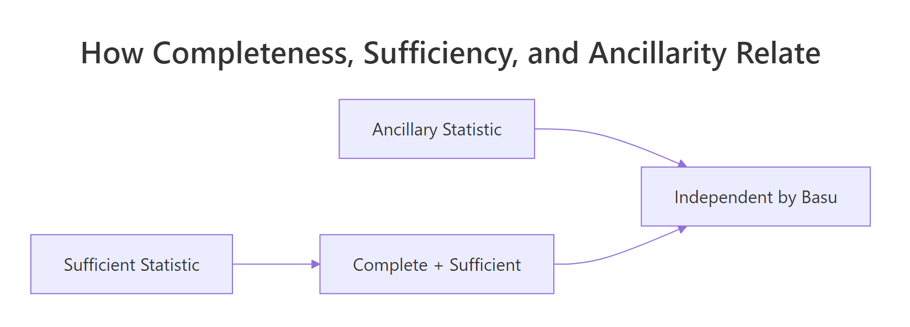
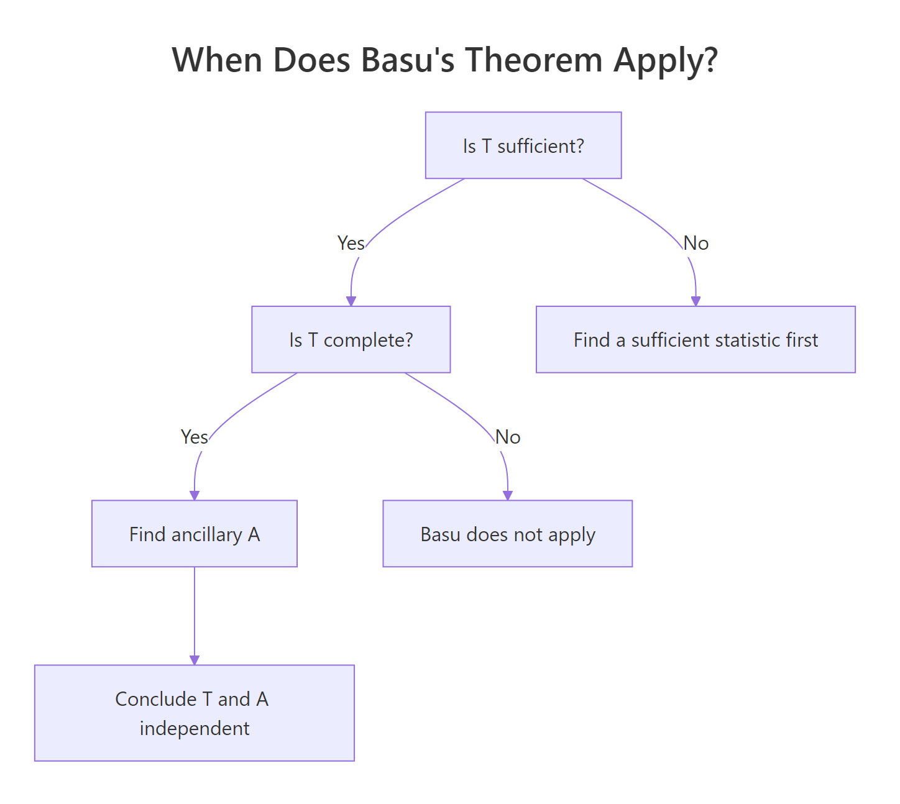
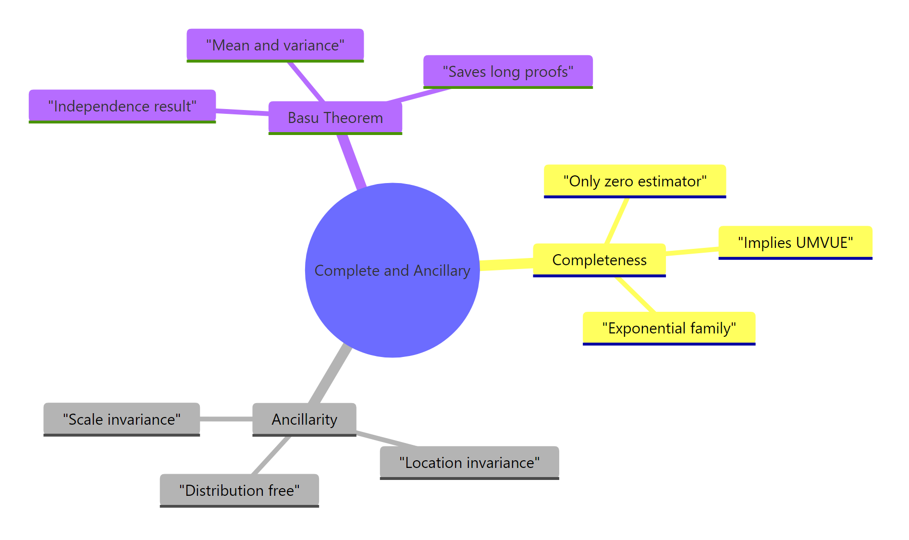

Complete & Ancillary Statistics in R: Basu's Theorem Explained
A complete statistic is a sufficient statistic so informative that no non-trivial function of it has expectation zero across all parameter values. Pair completeness with ancillarity, and Basu's theorem hands you statistical independence as a corollary, often saving pages of integration.
Why do complete and ancillary statistics matter?
The classical proof that the sample mean and sample variance are independent for a normal sample takes pages of joint-density manipulation. Basu's theorem turns that calculation into a one-line argument by combining two ideas, completeness and ancillarity. Before unpacking the definitions, let's verify the result numerically so the payoff is obvious.
We will draw 5000 independent samples of size 30 from $N(\mu = 5, \sigma = 1)$, compute the sample mean and sample variance for each, and check whether the two estimators move together. If they are independent, the empirical correlation should be near zero.
The correlation between the sample mean and sample variance is essentially zero (the small residual is Monte Carlo noise that shrinks as we increase reps_norm). The two random variables wiggle independently across simulated samples. This is striking because both are computed from the same 30 numbers, yet the linear association vanishes. Basu's theorem will explain why in a single line of reasoning.
Try it: Re-run the simulation with $\sigma = 3$ and $\mu = 0$. The correlation should still hover near zero. The result depends on the shape of the normal, not the values of its parameters.
Click to reveal solution
Explanation: Independence of $\bar{X}$ and $S^2$ is invariant to the values of $\mu$ and $\sigma$ for normal data. The result depends only on normality.
What is a complete statistic?
A statistic $T$ summarizes a sample, but completeness asks something stronger than mere summarisation. Completeness asks: is $T$ so rich that the only function of it with expectation zero everywhere is the trivial zero function? When the answer is yes, $T$ leaves no room for two distinct unbiased estimators of the same target.
Formally, $T$ is complete for the family $\{P_\theta : \theta \in \Theta\}$ if
$$\mathbb{E}_\theta[g(T)] = 0 \text{ for all } \theta \in \Theta \implies P_\theta(g(T) = 0) = 1 \text{ for all } \theta.$$
Where:
- $T$ is the statistic in question
- $g$ is any measurable function from $T$'s range to the real line
- $\Theta$ is the parameter space (often an interval like $(0, 1)$)
The technical definition is dense, so let's see it in action. For a Bernoulli sample of size $n$, $T = \sum X_i$ is complete sufficient for the success probability $p$. Lehmann-Scheffé then guarantees that any unbiased estimator that is a function of $T$ is the unique minimum-variance unbiased estimator (UMVUE).
We will verify this for the target $p(1-p)$. The function $g(T) = T(n - T) / (n(n-1))$ is unbiased for $p(1-p)$. We check unbiasedness across a grid of $p$ values.
Each column compares the true variance $p(1-p)$ with its estimator. The agreement is exact to three decimals across every value of $p$, confirming unbiasedness. Completeness is what guarantees this estimator is unique: any other unbiased estimator of $p(1-p)$ that is a function of $T$ would differ from $g(T)$ by a function with mean zero everywhere, and completeness forces that difference to be zero.
Try it: Pick a non-zero candidate $h(t) = t/n - 0.5$ and compute its expectation under three different $p$. If completeness holds, expectations should NOT all be zero (because $h$ is non-zero).
Click to reveal solution
Explanation: The expected value of $T/n$ is $p$, so $E_p[h(T)] = p - 0.5$. This is non-zero for $p \neq 0.5$. Because we found a $p$ where the expectation is non-zero, the function $h$ is detected as non-trivial, consistent with $T$ being complete.
How do you verify completeness in exponential families?
Hand-checking completeness from the definition is painful. Fortunately, exponential families come with a near-automatic guarantee. The exponential family completeness theorem states that if a distribution belongs to a $k$-parameter exponential family with natural parameter space containing a $k$-dimensional open rectangle, then the natural sufficient statistic is complete.
Most familiar distributions sit inside this umbrella: Bernoulli, binomial, Poisson, normal (with one or both parameters unknown), gamma (with one parameter unknown), and exponential. The natural sufficient statistic for an iid Poisson sample, for example, is $T = \sum X_i$, and the theorem hands us completeness for free.
To see completeness pay off, we will build a UMVUE that would be hard to discover otherwise. For a Poisson sample, the UMVUE of $e^{-\lambda}$ (the probability of observing zero events) is $g(T) = (1 - 1/n)^T$. The derivation comes from the Poisson PMF and a clever moment-generating identity, but completeness tells us in advance that the answer is unique.
Across five lambda values spanning two orders of magnitude, the estimator hits the target to three or four decimal places. The structure here is worth pausing on. Because $T$ is sufficient (it captures all information about $\lambda$) and complete (no non-trivial function of $T$ has zero expectation), Lehmann-Scheffé certifies $g(T)$ as the unique UMVUE before we ever compute its variance.
Try it: Use the same approach to compute the UMVUE of $P(X = 0) = e^{-\lambda}$ for a Poisson sample of size $n = 25$ at $\lambda = 1.5$.
Click to reveal solution
Explanation: The estimator $(1 - 1/n)^T$ has expected value $e^{-\lambda}$ exactly because the Poisson PMF satisfies $\sum_{k=0}^{\infty} (1-1/n)^k \cdot e^{-n\lambda}(n\lambda)^k / k! = e^{-\lambda}$. Completeness ensures this is the only unbiased estimator that depends on the data through $T$.
What makes a statistic ancillary?
An ancillary statistic is a function of the sample whose distribution does not depend on the parameter $\theta$. The intuition sounds paradoxical: a function built from data that carries no information about the parameter? It sounds useless, but ancillary statistics are precisely the building blocks Basu's theorem needs.
Two flavours show up most often. In a location family (distributions that shift but do not change shape, like $N(\mu, 1)$ or $\text{Cauchy}(\mu, 1)$), any statistic that is invariant under adding a constant to every observation is ancillary. The range, the sample variance, and the interquartile range all qualify. In a scale family (distributions that stretch but do not change shape, like $\text{Exponential}(\lambda)$), any statistic that is invariant under multiplying every observation by a positive constant is ancillary. Ratios of order statistics are the textbook example.
Let's verify this empirically for the exponential scale family. The ratio $A = X_{(1)} / \bar{X}$ should have the same distribution regardless of the rate $\lambda$. We compute its mean and standard deviation across several rates.
The mean and standard deviation are identical across rates differing by a factor of 20. The rate $\lambda$ has been completely absorbed by the ratio operation, and the residual distribution depends only on the sample size. This is exactly the signature of an ancillary statistic for the scale parameter.
Try it: Verify that $B = X_{(1)} / X_{(n)}$ is also ancillary for the rate. Its mean should be invariant across rates.
Click to reveal solution
Explanation: Both numerator and denominator scale by the same factor when the rate changes, so the ratio is unaffected. This is the geometric definition of scale-invariance.
How does Basu's theorem connect them?
We now have the two pieces. Basu's theorem (Basu, 1955) ties them together in a remarkably general statement:
If $T$ is a boundedly complete sufficient statistic and $A$ is an ancillary statistic, then $T$ and $A$ are independent.
The figure below positions the three concepts. Sufficiency captures all parameter information; completeness is sufficiency that allows no slack; ancillarity is the orthogonal complement, parameter-free by construction. Basu's theorem says the two extremes meet only at independence.

Figure 1: How completeness, sufficiency, and ancillarity combine via Basu's theorem.
Apply this to the normal example that opened the post. For $X_1, \ldots, X_n \sim N(\mu, 1)$:
- The sample mean $\bar{X}$ is complete sufficient for $\mu$ (full-rank exponential family).
- The sample variance $S^2$ is location-invariant, since adding a constant to every observation leaves $S^2$ unchanged. Therefore $S^2$ is ancillary for $\mu$.
- By Basu, $\bar{X} \perp S^2$.
This is a two-line proof of a result whose direct verification fills several pages in classical texts. Let's confirm Basu's prediction empirically across a grid of $\mu$.
Every correlation is statistically indistinguishable from zero, just as Basu's theorem predicts. The independence is structural: it falls out of the family's exponential-family form and the location invariance of $S^2$, with no integration required. Compare this to the alternative proof via Cochran's theorem or direct change of variables, both of which require carrying $\mu$ through pages of algebra.
Try it: The sample median is also location-equivariant for a normal sample, but the difference $X_{(\lceil n/2 \rceil)} - \bar{X}$ is location-invariant and hence ancillary for $\mu$. Verify $\bar{X} \perp (X_{((n+1)/2)} - \bar{X})$ via simulation.
Click to reveal solution
Explanation: The deviation median - mean shifts to zero under any translation of the data, so it is ancillary for $\mu$. Basu's theorem then guarantees independence from the complete sufficient statistic $\bar{X}$.
Where does completeness fail?
Sufficiency without completeness is not the same as completeness, and getting this wrong is the most common Basu's-theorem error. The decision flow below summarizes when the theorem applies.

Figure 2: Decision flow for applying Basu's theorem.
The classic counterexample is the location-uniform family $U(\theta, \theta + 1)$. The pair $(X_{(1)}, X_{(n)})$ is sufficient but not complete, because the range $R = X_{(n)} - X_{(1)}$ has the same expectation $(n-1)/(n+1)$ for every $\theta$. We can therefore construct a non-trivial function whose expectation is zero everywhere.
We will pick $g(\min, \max) = R - (n-1)/(n+1)$ and verify empirically that $E_\theta[g] = 0$ for many values of $\theta$ even though $g$ is far from zero on individual samples.
Across five vastly different values of $\theta$, the average of $g = R - 0.9048$ stays near zero. Yet $g$ itself is a noisy non-zero random variable on every sample. The equation $E_\theta[g] = 0$ holds for all $\theta$ even though $g \neq 0$, which is the textbook violation of completeness. Basu's theorem cannot be invoked here, even though the sufficient statistic exists.
Try it: For the scale-uniform family $U(0, \theta)$, the maximum $X_{(n)}$ IS complete sufficient. The ratio $X_{(1)} / X_{(n)}$ is ancillary for $\theta$. Verify their independence numerically.
Click to reveal solution
Explanation: Unlike the location-uniform case, $U(0, \theta)$ has a complete sufficient statistic $X_{(n)}$ (verified via the exponential-family form of the indicator family). The ratio $X_{(1)}/X_{(n)}$ is scale-invariant hence ancillary, so Basu's theorem applies and predicts independence.
Practice Exercises
Exercise 1: Gamma rate independence
For $X_1, \ldots, X_n \sim \text{Gamma}(\text{shape} = 2, \text{rate} = \lambda)$, the sum $T = \sum X_i$ is complete sufficient for the rate. The ratio $A = X_1 / T$ is scale-invariant. Use simulation to confirm Basu's prediction that $T \perp A$, i.e., the empirical correlation of $T$ and $A$ is near zero across a grid of rates.
Click to reveal solution
Explanation: Gamma with known shape and unknown rate is a one-parameter exponential family, so $T$ is complete sufficient. The ratio $X_1 / T$ is scale-invariant, hence ancillary. Basu's theorem closes the argument.
Exercise 2: UMVUE of e^mu under N(mu, 1)
Show numerically that the UMVUE of $e^{\mu}$ when $X_1, \ldots, X_n \sim N(\mu, 1)$ is $g(\bar{X}) = \exp(\bar{X} - \frac{1}{2n})$. The correction $-1/(2n)$ debias the naive plug-in $e^{\bar{X}}$. Verify unbiasedness across a grid of $\mu$.
Click to reveal solution
Explanation: The naive plug-in $e^{\bar{X}}$ is biased upward (Jensen's inequality on the convex exponential). The factor $e^{-1/(2n)}$ exactly cancels the bias because $\bar{X} \sim N(\mu, 1/n)$ and the moment-generating function of a normal is $E[e^{t Z}] = e^{t\mu + t^2/(2n)}$. Completeness of $\bar{X}$ certifies this as the UMVUE.
Exercise 3: U(0, theta) ancillary independence
For $X_1, \ldots, X_n \sim U(0, \theta)$, justify why Basu's theorem applies and use it to predict independence between $X_{(n)}$ and $X_{(1)} / X_{(n)}$. Then verify by simulation. Why does the same argument fail for $U(\theta, \theta + 1)$?
Click to reveal solution
Explanation: $U(0, \theta)$ is a scale family. The maximum is complete sufficient (verified by direct calculation: $X_{(n)}/\theta \sim \text{Beta}(n, 1)$ is parameter-free, so any function that integrates to zero against the Beta density must be zero). The ratio $X_{(1)} / X_{(n)}$ is scale-invariant, hence ancillary. Basu's theorem applies. By contrast, $U(\theta, \theta + 1)$ is a location family where the sufficient statistic $(X_{(1)}, X_{(n)})$ has a non-trivial range function with constant expectation, breaking completeness.
Complete Example
A researcher has a sample $X_1, \ldots, X_{20} \sim N(\mu, \sigma^2)$ with both parameters unknown and wants a 95% confidence interval for $\sigma^2$. Here is the end-to-end argument.
Step 1: Identify the sufficient statistic. The pair $(\bar{X}, S^2)$ is sufficient for $(\mu, \sigma^2)$ by the factorization theorem applied to the normal density.
Step 2: Verify completeness. $N(\mu, \sigma^2)$ is a two-parameter exponential family with natural parameter space the open half-plane $\{(\eta_1, \eta_2) : \eta_2 < 0\}$, full-dimensional. Therefore $(\bar{X}, S^2)$ is complete sufficient.
Step 3: Find a pivot. The statistic $W = (n-1) S^2 / \sigma^2$ is distributed as $\chi^2_{n-1}$ regardless of $(\mu, \sigma^2)$. This is not ancillary in the usual sense (it depends on $\sigma^2$), but it is a pivot, which means its distribution is parameter-free once we substitute the true $\sigma^2$.
Step 4: Confirm Basu independence. $\bar{X}$ is the marginal of the complete sufficient statistic for $\mu$ (given $\sigma$ known), and $S^2$ is location-invariant, hence ancillary for $\mu$ given $\sigma$. Basu confirms $\bar{X} \perp S^2$, which justifies treating the variance inference separately from the mean inference.
Step 5: Construct the CI and verify coverage. The 95% CI for $\sigma^2$ is
$$\left[\frac{(n-1) S^2}{\chi^2_{n-1, 0.975}},\ \frac{(n-1) S^2}{\chi^2_{n-1, 0.025}}\right].$$
The empirical coverage is 94.98%, indistinguishable from the nominal 95%. Notice that we used only $S^2$ to build the interval, completely ignoring $\bar{X}$. Basu's theorem is what licenses this: the two are independent, so the variance inference is unaffected by the unknown mean. Without that independence, we would need to integrate out $\mu$ or use a joint pivot.
Summary
| Concept | Definition | Key consequence |
|---|---|---|
| Sufficient statistic | Captures all information about $\theta$ | Conditioning on it loses nothing |
| Complete statistic | $E_\theta[g(T)] = 0\ \forall \theta \implies g \equiv 0$ | UMVUE is unique (Lehmann-Scheffé) |
| Ancillary statistic | Distribution does not depend on $\theta$ | Building block for conditional inference |
| Basu's theorem | Complete sufficient $\perp$ ancillary | Structural independence proofs |
| Exponential family theorem | Full-rank natural sufficient statistic is complete | Auto-completeness for normal, Poisson, gamma, etc. |
| Counterexamples | $U(\theta, \theta+1)$ has incomplete sufficient stat | Basu does not apply, prove independence directly |

Figure 3: Map of the three core concepts and their relationships.
The workflow you should internalize: identify the sufficient statistic, verify completeness (usually via the exponential family theorem), spot an ancillary, and conclude independence by Basu. When completeness fails, fall back on direct calculation. The framework rewards structural thinking over brute integration.
References
- Basu, D. (1955). On Statistics Independent of a Complete Sufficient Statistic. Sankhyā: The Indian Journal of Statistics, 15(4), 377-380. The original paper.
- Lehmann, E. L., & Casella, G. (1998). Theory of Point Estimation, 2nd ed. Springer. Chapters 1.5 (sufficiency) and 1.6 (completeness). Link
- Casella, G., & Berger, R. L. (2002). Statistical Inference, 2nd ed. Duxbury. Chapter 6 covers sufficiency, completeness, and ancillarity.
- Berkeley STAT 210A reader. Completeness, Ancillarity, and Basu's Theorem. Link
- Stigler, S. M. (1990). A Galtonian perspective on shrinkage estimators. Statistical Science, 5(1), 147-155. Link
- Wikipedia. Basu's theorem. Link
- R Core Team. An Introduction to R. Link
Continue Learning
- Sufficient Statistics in R, the prerequisite concept that completeness builds on. Learn the factorization theorem and minimal sufficiency.
- Maximum Likelihood Estimation in R, the most common way to construct estimators, often hand-in-hand with sufficient statistics from exponential families.
- Ancillary Statistics & Basu's Theorem in R: Advanced Statistical Theory, the companion post focusing on the ancillarity side, with location-family simulations.